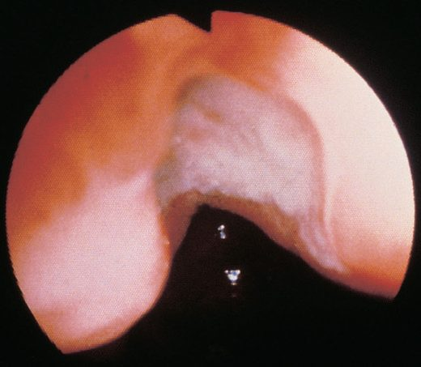
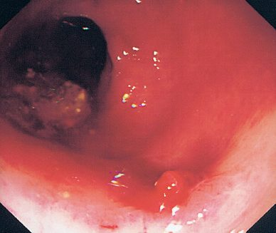
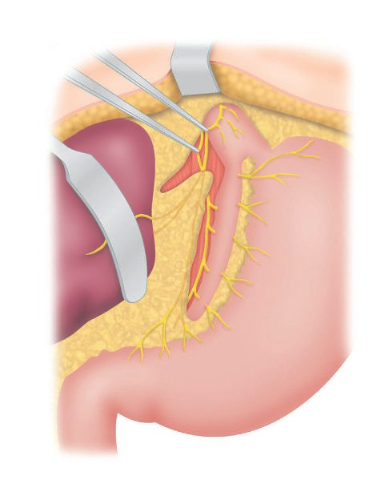
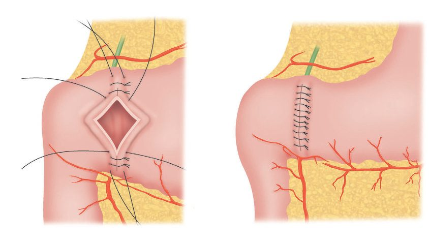
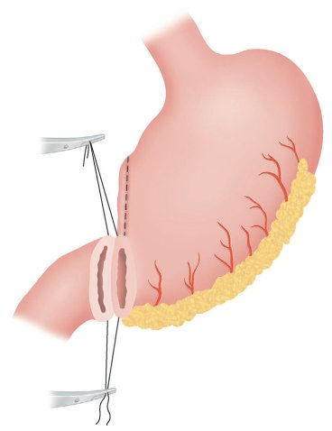
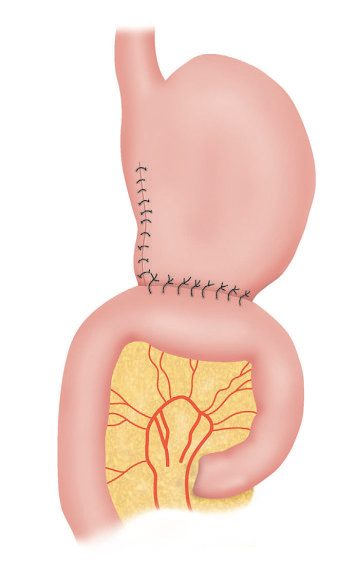
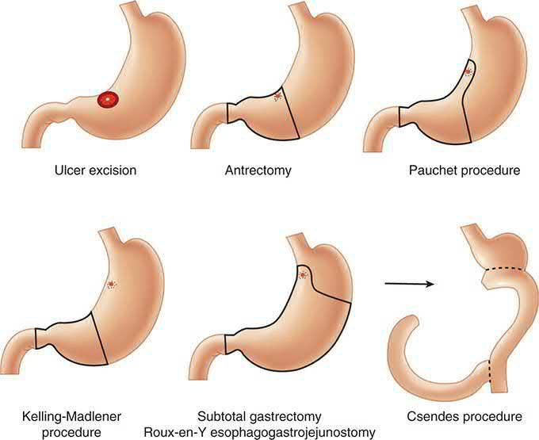
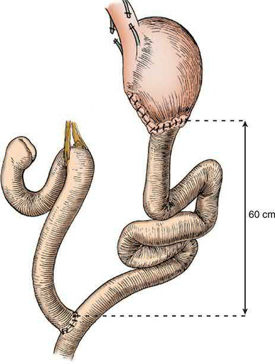

Peptic Ulcer Disease
Summary
- Peptic ulcers are erosions of the gastric or duodenal mucosa that extend through the muscularis mucosae, most commonly caused by Helicobacter pylori infection or NSAID use [1].
- Although the name suggests an association with pepsin, in the absence of acid peptic ulcers do not occur, and nearly all can be healed with proton pump inhibitors [2].
- Global incidence and prevalence have declined substantially in recent decades owing to better understanding of H. pylori pathogenesis and NSAID risk, and elective surgery for uncomplicated disease is now rare, with surgical treatment reserved chiefly for complications, bleeding, perforation, and obstruction [1][2].
- Operative intervention is now performed primarily for ulcer complications, which in decreasing order of operative frequency are perforation, obstruction, bleeding, and non-healing [3].
In the UK, peptic ulcer disease is managed along a defined NHS pathway. Primary care reviews medication, screens for alarm features against the suspected-cancer referral criteria, and applies a H. pylori "test and treat" strategy; endoscopically proven ulcers receive eradication therapy and a defined healing course of acid suppression with protocol-driven retesting; and acute upper gastrointestinal bleeding is managed under a separate guideline built around formal risk scoring, early endoscopy, and a stepped escalation from endoscopic haemostasis to interventional radiology to surgery [4][5][6].
![The four-stage NHS care pathway for peptic ulcer disease. Stage 1, primary care assessment: review medication for possible causes of dyspepsia (NSAIDs, corticosteroids, nitrates, calcium antagonists, theophyllines and bisphosphonates) and refer same day for dyspepsia with significant acute gastrointestinal bleeding (CG184 1.3.1, 1.3.2). Stage 2, suspected cancer referral: refer on the suspected cancer pathway for dysphagia at any age, or age 55 and over with weight loss plus upper abdominal pain, reflux or dyspepsia, the oesophageal criterion is NG12 1.2.1 and the identical stomach criterion is NG12 1.2.7. Stage 3, H. pylori test and treat: test with a carbon-13 urea breath test or stool antigen test after a 2-week PPI washout, then give a 7-day twice-daily course of a PPI with amoxicillin plus either clarithromycin or metronidazole (CG184 1.4.2, 1.9.1, 1.9.4). Stage 4, healing and follow-up: for an NSAID-associated ulcer stop the NSAID and give a full-dose PPI for eight weeks, and repeat endoscopy at 6 to 8 weeks for a gastric ulcer to confirm healing (CG184 1.7.2, 1.7.3). Note that the figure prefixes every number with a bare](../assets/infographics/pud-uk-pathway.webp)
Definition
- A peptic ulcer is a breach in the gastric or duodenal mucosa that extends through the muscularis mucosa into the deeper layers of the wall [7].
- Common sites are the first part of the duodenum and the lesser curve of the stomach, but ulcers also occur at a gastric stoma after surgery, in the oesophagus, and in a Meckel's diverticulum containing ectopic gastric epithelium.
- They occur at a junction between different epithelial types, in the epithelium least resistant to acid damage [2].
Anatomical classes
- The three typical locations for peptic ulcer are duodenal, gastric, and marginal (anastomotic), and the pathophysiology and treatment vary by location [3].
- In the United States, benign gastric ulcers are found in approximately 90,000 new patients a year, about one-fifth the number of duodenal ulcers, whereas in Japan gastric ulcers are 5 to 10 times more common.
- Gastric ulcer is more common in men than women and occurs in a cohort approximately 10 years older than that of duodenal ulceration [3].
- Although benign gastric ulcers may occur anywhere in the stomach, more than half lie along the lesser curvature proximal to the incisura angularis, fewer than 10% are on the greater curvature, and most lie within 2 cm of the histological transition between fundic and antral mucosa [3].
Marginal ulcers are peptic ulcers occurring characteristically on the jejunal side of a gastrojejunostomy following distal gastrectomy, gastric bypass, or simple gastrojejunostomy [3]. They develop in about 10% of patients after gastric bypass [8].
Pathophysiology
Acid, pepsin and mucosal defence
- Peptic ulcers arise from decreased protective (defensive) factors, mucosal bicarbonate secretion, mucus production, mucosal blood flow, growth factors, cell renewal, endogenous prostaglandins (or increased damaging (aggressive) factors) hydrochloric acid, pepsins, ethanol, smoking, duodenal bile reflux, ischaemia, NSAIDs, and especially H. pylori infection [1].
- Formation of peptic ulcers depends on gastric secretion of acid and pepsin, an association captured in the dictum "no acid, no ulcer", and H. pylori infection is known to secondarily induce alterations in gastric acid secretion [3].
- Abnormalities of mucosal function are also implicated: several agents used to treat peptic ulceration are cytoprotective, acting via mucosally secreted bicarbonate or on mucosal prostaglandin production, and their ability to heal ulcers indicates that defects in mucosal defence contribute alongside abnormalities of acid secretion [3].
Helicobacter pylori
- H. pylori is a spiral-shaped, flagellate, microaerophilic gram-negative bacterium that resides within/beneath the gastric mucus layer.
- It produces urease, splitting urea into ammonia and bicarbonate to create a protective alkaline microenvironment, and causes injury via toxic products (ammonia, cytotoxins, mucinase, phospholipases, platelet-activating factor), local mucosal immune activation, altered gastrin levels/acid secretion, and gastric metaplasia in the duodenum that permits bacterial colonization there [1].
- Mucosal infestation of the antrum is the factor that contributes to ulceration in most patients, acting both by weakening local defences and by increasing acid secretion [3].
- CagA- and VacA-positive H. pylori strains induce more inflammation, and CagA-positive strains are associated with gastric adenocarcinoma [1].
NSAIDs
- NSAIDs inhibit cyclooxygenase enzymes, reducing prostaglandin-mediated mucosal protection (mucin/bicarbonate secretion, mucosal blood flow, epithelial proliferation), and independently increase PUD risk three- to four-fold, more often producing gastric ulcers [1].
- Clinically significant ulceration of the stomach and duodenum occurs at an estimated rate of 2% to 4% per patient-year in NSAID users [3].
- Although NSAID mucosal injury is more common in the stomach than the duodenum, ulcer complications occur with equal frequency at the two sites, and NSAID-associated ulcers heal rapidly when the drug is withdrawn, corresponding temporally to reversal of the antiprostaglandin effect [3]. H. pylori and NSAID use independently increase the risk of peptic ulcer and ulcer bleeding and also act synergistically; the incidence of NSAID-related ulcer complications and the attendant mortality are both highest in older patients, and peptic ulcer disease is rare in individuals who are H. pylori-negative and take no NSAIDs [3].
Smoking
- Substantial evidence implicates cigarette smoking as a significant risk factor for chronic peptic ulcers: smokers have an increased risk of acquiring H. pylori infection, smoking impairs ulcer healing and blunts the effectiveness of active ulcer therapy, and it increases both the probability that surgery will be required and the risks of operative therapy [3].
- When H. pylori is eradicated, smokers appear to have no greater risk of peptic ulceration than non-smokers, suggesting that smoking is probably not an independent risk factor but acts by increasing the harmful effects of the infection; cessation of smoking is a key goal of anti-ulcer therapy [3].
- Smoking also increases relapse after treatment [2].
Anatomical consequences
Anterior duodenal ulcers tend to perforate, while posterior duodenal ulcers tend to bleed, sometimes by eroding into the gastroduodenal artery [2][8]. Chronic gastric ulcers may erode posteriorly into the pancreas or major vessels (e.g., splenic artery), and fibrosis can cause an "hourglass" deformity of the stomach [2].
Marginal (anastomotic) ulcer
- The risk of marginal ulceration relates to the acid/peptic load delivered into the jejunum (a site unaccustomed to acid) and to luminal jejunal buffering, which is largely absent in a Roux gastrojejunostomy [3].
- Risk factors therefore include Roux gastrojejunostomy, a large gastric pouch after distal gastrectomy or Roux-en-Y gastric bypass, gastrogastric fistula after gastric bypass, retained or excluded antrum, and incomplete or inadequate vagotomy; ischaemia and permanent suture material are further contributors [3].
- Marginal ulcers are prone to the same complications as duodenal or gastric ulcers (perforation, obstruction, bleeding, and non-healing) and cancer is usually not a concern unless the anastomosis was performed many years earlier, when stump cancer becomes a consideration [3].
Stress ulcers
- Stress ulcers are a distinct entity from H. pylori/NSAID-related PUD: superficial mucosal lesions, usually confined to the stomach and proximal duodenum, that arise in critically ill patients with major trauma, sepsis, haemorrhage, or respiratory failure and can progress to life-threatening bleeding [1].
- Two eponymous forms are recognised: a Cushing ulcer follows elevated intracranial pressure, via resultant vagal nerve stimulation; a Curling ulcer follows a thermal burn involving more than 20–30% of body surface area, via the resultant gastric ischaemia [1].
- The ABSITE Review's mnemonic assigns Cushing's ulcer to head trauma and Curling's ulcer to burns, though it is not itself consistent on which site (gastric or duodenal) each affects, so no anatomic site is asserted here [8].
- Prophylaxis with a PPI or H2-receptor antagonist is considered for critically ill patients at risk, including those with elevated intracranial pressure, burns, high-dose corticosteroid use, chronic or high-dose NSAID use, or a prior history of gastric ulceration or GI bleed [1].
Gastric motility
In addition to H. pylori infection, motility defects have been demonstrated in some patients with benign gastric ulcers, delayed gastric emptying, abnormal pyloric sphincter function, prolonged high-amplitude gastric contractions, duodenogastric reflux, and alterations in the gastric migrating motor complex, but these have not been definitively shown to be pathogenic and their relevance to gastric ulceration is unsettled [3].
How H. pylori produces a duodenal ulcer
- Over 50% of people worldwide are infected with H. pylori; the infection is chronic, does not resolve without specific treatment, accounts for 80–90% of all gastritis, and in infected individuals 90% of gastric bacteria are Helicobacter, whereas in uninfected stomachs 90% are a mix of firmicutes, actinobacteria, bacteroidetes, proteobacteria and fusobacteria [9].
- Up to 15% of the organism's protein is cytoplasmic urease, which converts periplasmic urea into carbon dioxide and ammonia to buffer the surrounding acid until the flagella can propel it into the surface mucus; strains lacking either flagella or urease are non-pathogenic [9].
- The organism does not usually invade the epithelium but attaches to it, through adhesins such as neutrophil-activating protein A, heat-shock protein 60 and sialic-acid-binding adhesin, and secretes vacuolating cytotoxin A and CagA, triggering recruitment of neutrophils followed by T and B lymphocytes, plasma cells and macrophages, with reactive oxygen and nitrogen species, DNA damage, chromosomal instability and increased apoptosis weakening mucosal defence over the long term [9].
- Acute infection causes a non-erosive pangastritis invariably followed by chronic gastritis: in about 10% this is antral gastritis sparing the proximal stomach, which predisposes to peptic ulcer, while the other 90% develop corpus-dominant gastritis, which leads to gastric cancer in 1–3% [9].
- Patients with antral gastritis are three-and-a-half times more likely to develop ulcer disease; up to 90% of duodenal and at least 70% of gastric ulcer patients are infected, and eradication cuts recurrence from more than 75% after acid suppression alone to under 20% [9].
- In duodenal ulcer the antral gastritis produces relative hypergastrinaemia by depleting antral somatostatin, the primary inhibitor of gastrin release, fewer D cells, less somatostatin mRNA and less somatostatin, explained by antral alkalinisation from the urease (acid in the antrum releases somatostatin), cytokine toxicity to D cells, and Helicobacter production of N-α-methylhistamine, an H3 agonist that suppresses D-cell release [9].
- Because the gastritis spares the oxyntic mucosa, hypergastrinaemia causes hyperacidity and parietal-cell hyperplasia, the acid load produces gastric metaplasia in the post-pyloric duodenum, H. pylori colonises that metaplastic mucosa (raising the risk of duodenal ulcer 50-fold) and acid-stimulated duodenal bicarbonate release falls; once the infection is cured, acid secretory physiology tends to normalise, and relapse after eradication may signal reinfection [9].
- Long-term PPI use in the presence of active infection can convert antral to corpus-predominant gastritis, atrophic gastritis and an increased cancer risk, which is why infection should be treated and eradication confirmed rather than suppressed indefinitely [9].
Acid secretion in duodenal and gastric ulcer
- Duodenal ulcer patients as a group have higher mean basal and maximal acid output than controls and secrete more acid in response to any stimulus, yet many have outputs in the normal range and there is no correlation between acid secretion and ulcer severity; their "normal" fasting gastrin has been argued to be inappropriately high for the acid produced, implying impaired feedback and increased parietal-cell sensitivity to gastrin, and some also have faster gastric emptying delivering more acid per unit time, together with reduced duodenal bicarbonate secretion and gastric metaplasia [9].
- In gastric ulcer acid secretion is variable: Johnson type I ulcers (near the incisura on the lesser curvature) and type IV (near the gastro-oesophageal junction) have normal or reduced secretion, whereas types II and III have normal or increased secretion and are treated surgically like duodenal ulcer; weak mucosal defence permitting back-diffusion of acid, and duodenogastric reflux of bile, lysolecithin and pancreatic juice, are implicated in gastric ulcer, and although chronic gastric ulcer is usually surrounded by gastritis it is unproven that the gastritis causes the ulcer [9].
- Chronic NSAID use (including aspirin) raises the risk of peptic ulcer about fivefold and of upper GI bleeding at least twofold, more than half of patients presenting with haemorrhage or perforation report recent NSAID use, and many are asymptomatic until the complication occurs; the risk of serious GI events on NSAIDs is more than three times that of controls, rising to five times over 60, and elderly NSAID users are 10 times as likely to need an operation for a GI complication and about four-and-a-half times as likely to die of one [9].
- Smokers are about twice as likely to develop ulcer disease, smoking increasing acid secretion and duodenogastric reflux while decreasing gastroduodenal prostaglandin and pancreaticoduodenal bicarbonate production; crack cocaine is linked to juxtapyloric ulcers that tend to perforate, and alcohol, though commonly cited, lacks confirmatory data [9].
Clinical features
Uncomplicated disease
- Peptic ulceration is typically characterised by non-radiating epigastric pain described as burning, stabbing, or gnawing, usually related to eating; ingestion of antacids or initiation of antisecretory agents usually provides prompt relief, and in uncomplicated cases physical examination is normal [3].
- Duodenal ulcer pain is typically well-localized mid-epigastric pain, generally tolerable, often relieved by food; when it becomes constant this suggests deeper penetration, and radiation to the back suggests pancreatic penetration, while diffuse peritoneal irritation indicates free perforation [1][3].
- Gastric ulcer pain is often precipitated rather than relieved by food, with associated weight loss and anorexia, and is less cyclical than duodenal ulcer pain [7].
- Symptoms are typically intermittent and periodic in relation to spontaneous ulcer healing; vomiting is not a notable feature unless outlet obstruction has occurred, and weight loss or gain, chronic bleeding presenting as microcytic anaemia, and epigastric tenderness on examination may be found [2].
Differential diagnosis
The differential includes non-ulcer dyspepsia, gastritis, gastric neoplasia, cholelithiasis and related biliary disease, neoplastic lesions of the liver, and both inflammatory and neoplastic disorders of the pancreas; in dyspeptic patients, especially those older than 50 years, the most important differential diagnoses are peptic ulceration and gastric cancer [3]. For upper gastrointestinal bleeding specifically, a Dieulafoy lesion is an important mimic: a gastric arteriovenous malformation covered by normal mucosa that may be invisible when not actively bleeding, making it one of the most difficult causes of upper GI bleeding to treat [2].
Perforation
- Perforated peptic ulcer classically presents with sudden-onset severe generalized abdominal pain, board-like abdominal rigidity, and a patient disinclined to move; tachycardia and shock appear early, pyrexia later, though elderly patients on steroids may present atypically without classic rigidity [2].
- The pain is severe and constant, worse with breathing and moving, and may radiate to the back or shoulders, often following a prodrome of upper abdominal pain [10].
- Localized rather than generalized upper abdominal peritonitis may occur, especially after previous surgery where adhesions act to contain the contamination; mild fever, pallor, tachycardia, and hypotension are common, the hypotension often profound because of an autonomic reaction, and typically responding quickly to modest fluid resuscitation [10].
Gastric outlet obstruction
- Gastric outlet obstruction presents with early satiety, anorexia, weight loss, nausea, and vomiting, with prolonged vomiting leading to a hypochloremic, hypokalemic metabolic alkalosis [1][8].
- Chronic scarring from any of the three ulcer varieties may produce chronic nausea, vomiting, epigastric pain, weight loss, food intolerance, and even sitophobia [3].
- Vomiting and upper abdominal distension suggest gastric outlet obstruction from pyloric scarring [7].
- Because the resulting achlorhydria leaves stomach contents undigested, the patient may notice that the vomit contains food eaten 24 or 48 hours previously; epigastric distension, visible gastric peristalsis, and a succussion splash may be present [11].
Epidemiology and symptom pattern
- PUD has a prevalence of about 2% in the United States and a lifetime cumulative prevalence of about 10%, peaking around age 70, costing more than $8 billion a year; the 2006 in-hospital mortality was 3.7% for duodenal and 2.1% for gastric ulcer, with an age-adjusted hospitalisation rate of 56.5 per 100,000, down 21% on the previous decade, though hospitalisation and mortality for bleeding and perforation are rising in the elderly [9].
- The fall in physician visits, admissions and elective operations began before acid suppression or highly selective vagotomy were widely used, while emergency surgery and death rates have fallen far less, the net effect of falling H. pylori prevalence, better medical therapy and outpatient management set against NSAID and aspirin use in an ageing population [9].
- More than 90% of patients complain of non-radiating, burning epigastric pain; duodenal ulcer pain typically comes 2–3 hours after meals and at night, waking two-thirds of patients from sleep, whereas gastric ulcer pain more often occurs with eating and less often wakes the patient [9].
- Duodenal ulcer is about twice as common in men, gastric ulcer equally common in both sexes and in older patients, and other features include nausea, bloating, weight loss, occult blood in the stool and anaemia [9].
Aetiology
H. pylori infection and NSAID use are the two predominant causes of PUD; other, less common causes include Zollinger-Ellison syndrome (gastrinoma), other medications, infections, radiation therapy, and gastric bypass surgery [1]. H. pylori is associated with about 90% of duodenal ulcers and 70–90% of gastric ulcers, and its global prevalence is around 43%, down from 58% in the 1980s; roughly 80% of infected people are asymptomatic [1]. Duodenal ulcers are more common in men (up to 5:1) with peak incidence at 25–30 years; gastric ulcers show a milder male predominance (3:1) with a peak incidence around age 50 [7].
| Factor | Mechanism / note |
|---|---|
| H. pylori infection | Weakens local mucosal defences and increases acid secretion; the dominant cause in most patients |
| NSAIDs and aspirin | Suppress prostaglandin production and weaken mucosal defence; 2–4% clinically significant ulceration per patient-year of use |
| Cigarette smoking | Impairs healing, blunts therapy, increases recurrence; probably acts by amplifying H. pylori injury rather than independently |
| Exogenous steroids and acute stress | Contribute to ulcer formation |
| Zollinger-Ellison syndrome | Gastric acid hypersecretion from a gastrinoma |
| Prior gastric surgery | Marginal ulceration at a gastrojejunostomy |
Table compiled from the risk factors described above [1][3].
Zollinger-Ellison syndrome
Zollinger-Ellison syndrome (gastrinoma) causes ulceration through gastric acid hypersecretion and should be suspected in H. pylori-negative, non-NSAID, refractory, or atypically located ulcer disease [7][8]. The most accurate diagnostic test for ZES is the secretin stimulation test, with an increase in serum gastrin of ≥200 pg/mL after IV secretin suggestive of gastrinoma; roughly 80% of primary gastrinomas are found within the "gastrinoma triangle" [12].
Diagnosis
Endoscopy and biopsy
- Flexible upper endoscopy is the most reliable diagnostic method for both gastric and duodenal ulcers, allowing biopsy for malignancy and H. pylori testing [1].
- In controlled trials, endoscopy was both more sensitive (92% versus 54%) and more specific (100% versus 91%) than radiographic examination, although radiography should still be considered if perforation is suspected [3].
- Upper GI radiography can detect ulcer craters (50% with single contrast, 80–90% with double contrast) but has largely been replaced by endoscopy [1].
- All gastric ulcers should be regarded as potentially malignant regardless of appearance, and multiple biopsies (as many as 10) should be taken before an ulcer is accepted as benign; a single biopsy has only 70% sensitivity for detecting gastric cancer, four biopsies increase yield to 95%, and seven to 98% [1][2].
- About 10% of gastric ulcers are malignant or associated with malignancy, so biopsies should be taken from the perimeter of the lesion together with brushings (which raise diagnostic accuracy to approximately 95%) and healing must be confirmed on follow-up [3].
- Endoscopic demonstration of a duodenal ulcer does not require duodenal biopsy but should prompt mucosal biopsy of the gastric antrum to demonstrate H. pylori and guide therapy [3].


Ulcer site as a diagnostic clue
The most frequent site for duodenal peptic ulceration is the first portion of the duodenum, with the second portion less frequently involved; ulceration of the third or fourth portion is distinctly unusual and raises the possibility of gastrinoma or non-peptic causes such as cancer or ischaemia [3]. Peptic ulcers in the pyloric channel or prepyloric area resemble duodenal ulcers and should be treated as such, as type 3 gastric ulcers [3].
Helicobacter pylori testing
- Invasive H. pylori tests include rapid urease assay (sensitivity 84–95%, specificity 95–100%), histology (~95% sensitivity, 99% specificity, most accurate even with PPI use), and culture (80% sensitivity, 100% specificity, allows antibiotic sensitivity testing) [1].
- Noninvasive tests include the urea breath test and stool antigen test (both >95% sensitivity/specificity, preferred for confirming eradication), and serology (variable accuracy, cannot distinguish active from past infection) [1].
- The best test for confirming eradication is the urea breath test [8].
| Test | Type | Sensitivity | Specificity | Notes |
|---|---|---|---|---|
| Rapid urease assay | Invasive (biopsy) | 84–95% | 95–100% | Point-of-care at endoscopy |
| Histology | Invasive (biopsy) | ~95% | 99% | Most accurate even during PPI use |
| Culture | Invasive (biopsy) | 80% | 100% | Allows antibiotic sensitivity testing |
| Urea breath test | Noninvasive | >95% | >95% | Preferred test of eradication |
| Stool antigen test | Noninvasive | >95% | >95% | Preferred for confirming eradication |
| Serology | Noninvasive | Variable | Variable | Cannot distinguish active from past infection |
Table compiled from the test characteristics above [1][8].
- UK primary care is asked to review medications for possible causes of dyspepsia, for example calcium antagonists, nitrates, theophyllines, bisphosphonates, corticosteroids, and NSAIDs, and to suspend NSAID use in people needing referral, while considering cardiac or biliary disease as part of the differential [4].
- Refer people presenting with dyspepsia together with significant acute gastrointestinal bleeding immediately, on the same day, to a specialist [4].
- Where a person has had a previous endoscopy and has no new alarm signs, consider continuing management according to the previous endoscopic findings [4].
- The suspected-cancer thresholds are set by NG12.
- Refer using a suspected cancer pathway referral for oesophageal or stomach cancer if the person has dysphagia, or is aged 55 and over with weight loss together with upper abdominal pain, reflux, or dyspepsia; also consider a suspected cancer pathway referral for an upper abdominal mass consistent with stomach cancer [6].
- Consider non-urgent, direct-access upper gastrointestinal endoscopy in people with haematemesis, and in people aged 55 or over with treatment-resistant dyspepsia, upper abdominal pain with low haemoglobin levels, a raised platelet count with nausea, vomiting, weight loss, reflux, dyspepsia, or upper abdominal pain, or nausea or vomiting with weight loss, reflux, dyspepsia, or upper abdominal pain [6].
Test for H. pylori using a carbon-13 urea breath test or a stool antigen test, or laboratory-based serology where its performance has been locally validated; re-test using a carbon-13 urea breath test, and do not use office-based serological tests because of their inadequate performance [4]. Leave a 2-week washout period after PPI use before testing for H. pylori with a breath test or a stool antigen test [4].
Imaging in complicated disease
Free subdiaphragmatic gas on an erect chest radiograph is seen only about 60% of the time; where the chest radiograph is non-diagnostic, a CT scan is often required, and the intravenous contrast this needs is potentially nephrotoxic, requiring an eGFR above 35 [10]. Patients with suspected obstructing peptic ulcer should have upper endoscopy with biopsy and a CT scan, with traditional barium fluoroscopic studies also potentially revealing [3].

Investigating refractory disease
A serum gastrin level should be obtained in patients with ulcers refractory to medical therapy or requiring surgery, to rule out gastrinoma [1].
Testing strategy for H. pylori and gastrin
- Testing is indicated in peptic ulcer, gastritis, significant dyspepsia, MALT lymphoma and early gastric cancer [9].
- The urea breath test has sensitivity and specificity above 90% and, being positive only with active infection, suits both initial diagnosis and confirmation of eradication; stool antigen also detects active infection but only locally validated tests should be used; serology is useful but less accurate and stays positive after eradication, so it cannot confirm cure; histology and the rapid urease test on biopsies are the invasive alternatives, and culture is reserved for recurrent infection and sensitivity testing after second-line failure [9].
- All tests have a false-negative rate, so empirical treatment can be considered despite negative tests when clinical likelihood is high, a compliant, non-smoking, non-NSAID patient facing operation for a non-healing ulcer, or unexplained gastritis [9].
- In the young patient with dyspepsia and no alarm symptoms it may be appropriate to start empirical PPI therapy without endoscopy or contrast study, stopping NSAIDs and testing for Helicobacter, while discussing the small possibility of an alternative diagnosis including malignancy; endoscopy is needed for persistent dyspepsia, for those who cannot stop NSAIDs, and for any alarm symptom at any age, and every gastric ulcer and every site of gastritis should be biopsied [9].
- A baseline serum gastrin to exclude gastrinoma should be considered when the ulcer is unusual (distal duodenal or jejunal) or the patient is Helicobacter- and NSAID-negative; acid-suppressing drugs must be held for several days beforehand because they falsely raise gastrin [9].
Scoring and Severity
Modified Johnson classification of gastric ulcers
The modified Johnson anatomic classification is still used to guide surgical treatment despite predating modern understanding of H. pylori/NSAID etiology [1][7][8].
| Type | Site | Frequency | Acid output | Note |
|---|---|---|---|---|
| I | Lesser curve at the incisura | 50–60% | Low to normal | Most common type |
| II | Gastric body with a coexisting duodenal ulcer | 15–20% | Increased | Combined gastric and duodenal ulceration |
| III | Prepyloric | ~20% | Increased | Behaves like a duodenal ulcer |
| IV | High on the lesser curve near the GE junction | <10% | Normal | Juxtacardial; technically difficult to resect |
| V | Anywhere in the stomach | Not stated | Normal | Associated with long-term NSAID use |
Table compiled from the classification above [1][3][7][8].
Forrest classification of bleeding stigmata
The Forrest classification stratifies endoscopic stigmata of recent haemorrhage and predicts rebleeding risk [1][7].
| Forrest class | Endoscopic appearance | Rebleeding risk |
|---|---|---|
| IA | Active spurting haemorrhage | 90% |
| IB | Active oozing haemorrhage | 10–20% |
| IIA | Non-bleeding visible vessel | 50% |
| IIB | Adherent clot | 25–30% |
| IIC | Flat pigmented spot | 5–10% |
| III | Clean-based ulcer | 3–5% |
Table compiled from the classification above [1][7].
Most patients presenting with bleeding peptic ulcer (75%) have low-risk bleeds, but 25% have high-risk bleeds and essentially all deaths from bleeding ulcer occur in that latter group, which should be managed by a multidisciplinary team in a special unit or intensive care unit [3]. The Rockall score, though generalized to all causes of upper GI bleeding rather than PUD specifically, incorporates age, shock, comorbidity, endoscopic diagnosis, and endoscopic stigmata to predict rebleeding and death [2].
Use formal risk assessment scores for all patients with acute upper gastrointestinal bleeding: the Blatchford score at first assessment, and the full Rockall score after endoscopy [5]. Consider early discharge for patients with a pre-endoscopy Blatchford score of 0 [5].
![The NICE decision pathway for acute upper gastrointestinal bleeding, in two phases. Initial assessment and timing: perform the Blatchford score at first assessment and the full Rockall score after endoscopy (1.1.1), and consider early discharge if the pre-endoscopy Blatchford score is 0 (1.1.2); do not offer PPIs before endoscopy for suspected non-variceal bleeding (1.4.3); endoscope immediately after resuscitation if the patient is unstable, otherwise within 24 hours (1.3.1, 1.3.2). Intervention and escalation: adrenaline must never be used as monotherapy (1.4.1), the three permitted options are clips with or without adrenaline, thermal coagulation with adrenaline, and fibrin or thrombin with adrenaline, so clips alone are permitted while thermal and fibrin need adrenaline (1.4.2); offer a PPI only after endoscopy and only if stigmata of recent haemorrhage are shown (1.4.4); and escalate re-bleeding through repeat endoscopy, then interventional radiology, referring urgently for surgery if interventional radiology is not promptly available (1.4.5, 1.4.7)](../assets/infographics/pud-bleeding-pathway.webp)
AIMS65, Blatchford and Rockall as Schwartz applies them
- In-hospital mortality and length of stay can be predicted by the AIMS65 score, a score of 0 predicting negligible mortality and 5 a 30% in-hospital mortality [9].
- The maximal Blatchford score is 23 and the maximal Rockall score 11; the Blatchford score uses no endoscopic criteria and may be better at identifying the low-risk cohort, a Blatchford score of 1 or less or a Rockall score of 2 or less identifying patients very unlikely to have life-threatening bleeding, and the shorter modified Blatchford score (urea, haemoglobin, pulse, blood pressure; maximum 16) may be just as useful [9].
- Clinically, shock, haematemesis, a transfusion requirement above four units in 24 hours and endoscopic active bleeding or a visible vessel define the high-risk quarter of patients in whom virtually all deaths and all operations for bleeding occur [9].
- Patients taking NSAIDs or aspirin need concomitant acid suppression, preferably a PPI, if any risk factor is present: age over 60, a history of acid-peptic disease, concurrent steroid or anticoagulant intake, high-dose or chronic NSAID use, or high-dose or chronic aspirin above 325 mg/day [9].
Treatment and Management
Eradication and acid suppression
- Medical management is the mainstay: eradication therapy is curative when H. pylori is the principal factor, with reinfection uncommon in adults, and is more economical and safer than surgery [2].
- First-line H. pylori regimens include clarithromycin triple therapy (PPI, clarithromycin, amoxicillin) or bismuth quadruple therapy (PPI, bismuth, tetracycline, metronidazole), with bismuth quadruple therapy preferred where macrolide resistance risk (prior macrolide exposure or local clarithromycin resistance >15%) or penicillin allergy is present; treatment courses run 10–14 days [1].
- PPIs heal 85% of ulcers at 4 weeks and 96% at 8 weeks, more effectively and rapidly than H2-receptor antagonists [1].
- Antacids and sucralfate have a more limited, largely historical role [1].
- Patients on long-term NSAIDs or with a history of ulcer complications should be considered for lifelong maintenance PPI therapy, and lifelong acid suppression should be considered in all patients hospitalized for peptic ulcer [2][3][12].
- Offer H. pylori eradication therapy to people who test positive and have peptic ulcer disease [4].
- For people using NSAIDs with a diagnosed peptic ulcer, stop the NSAID where possible, offer a full-dose PPI or H2RA for 8 weeks, and if H. pylori is present subsequently offer eradication therapy [4].
- Offer a full-dose PPI or H2RA for 4 to 8 weeks to people who test negative for H. pylori and are not taking NSAIDs [4].
- Follow-up is protocolised.
- Offer people with a gastric ulcer and H. pylori a repeat endoscopy 6 to 8 weeks after beginning treatment, depending on the size of the lesion, and offer everyone with a peptic ulcer (gastric or duodenal) and H. pylori retesting 6 to 8 weeks after beginning treatment [4].
- If symptoms recur after initial treatment, offer a PPI at the lowest dose that controls symptoms and discuss "as-needed" self-management; offer H2RA therapy if there is an inadequate response to a PPI [4].
- Offer people needing long-term management an annual review, encouraging them to try stepping down or stopping treatment unless an underlying condition or comedication requires continuation [4].
Eradication regimens are all 7-day courses [4]:
| Line | Circumstance | Regimen |
|---|---|---|
| First | Standard | PPI + amoxicillin + either clarithromycin or metronidazole, twice daily; choose by lowest acquisition cost and previous antibiotic exposure |
| First | Penicillin allergy | PPI + clarithromycin + metronidazole, twice daily |
| First | Penicillin allergy with previous clarithromycin exposure | PPI + bismuth + metronidazole + tetracycline |
| Second | Symptoms persist after first-line treatment | PPI + amoxicillin + whichever of clarithromycin or metronidazole was not used first line, twice daily |
| Second | Previous exposure to both clarithromycin and metronidazole | PPI + amoxicillin + tetracycline (or levofloxacin † if a tetracycline cannot be used) |
| Second | Penicillin allergy, no previous fluoroquinolone | PPI + metronidazole + levofloxacin †, twice daily |
| Second | Penicillin allergy with previous fluoroquinolone exposure | PPI + bismuth + metronidazole + tetracycline |
Regimens marked † involve off-label use of levofloxacin; MHRA advice on restrictions and precautions for fluoroquinolone antibiotics applies [4]. Discuss treatment adherence with the person and emphasise its importance, and seek advice from a gastroenterologist if eradication is not successful with second-line treatment [4].
The PPI doses used within eradication therapy are [4]:
| PPI | Dose in eradication therapy |
|---|---|
| Esomeprazole | 20 mg |
| Lansoprazole | 30 mg |
| Omeprazole | 20 to 40 mg |
| Pantoprazole | 40 mg |
| Rabeprazole | 20 mg |
Bleeding ulcer
- For bleeding ulcers, initial management is resuscitation, IV PPI, and urgent endoscopy (within 24 hours) with endoscopic haemostasis (adrenaline injection plus heater probe and/or clips) achieving control in ~70% of cases [1][2].
- After initial resuscitation, early endoscopy should be performed and bleeding sites treated with epinephrine injection together with an energy source, with endotracheal intubation for airway protection considered case by case; rebleeding should prompt repeat endoscopic treatment or angiography [3].
- Angiographic embolization is an option for rebleeding or when endoscopy fails; a randomized trial found no significant difference in rebleeding between prophylactic embolization and standard treatment [1].

- Base transfusion decisions on the full clinical picture, recognising that over-transfusion may be as damaging as under-transfusion, and transfuse patients with massive bleeding with blood, platelets, and clotting factors in line with local massive haemorrhage protocols [5].
- Do not offer platelet transfusion to patients who are not actively bleeding and are haemodynamically stable.
- Offer platelets to patients who are actively bleeding with a platelet count below 50 × 10⁹/litre, and fresh frozen plasma to those actively bleeding with a prothrombin time (or INR) or activated partial thromboplastin time greater than 1.5 times normal, adding cryoprecipitate if fibrinogen remains below 1.5 g/litre despite FFP [5].
- Offer prothrombin complex concentrate to patients taking warfarin who are actively bleeding, and do not use recombinant factor VIIa except when all other methods have failed [5].
Offer endoscopy to unstable patients with severe acute upper gastrointestinal bleeding immediately after resuscitation, and within 24 hours of admission to all other patients [5]. Units seeing more than 330 cases a year should offer daily endoscopy lists [5].
Do not use adrenaline as monotherapy for endoscopic treatment of non-variceal bleeding; use a mechanical method such as clips with or without adrenaline, thermal coagulation with adrenaline, or fibrin or thrombin with adrenaline [5]. Do not offer acid-suppression drugs before endoscopy in suspected non-variceal upper gastrointestinal bleeding; offer proton pump inhibitors to patients with non-variceal bleeding and stigmata of recent haemorrhage shown at endoscopy [5].
Continue low-dose aspirin for secondary prevention of vascular events once haemostasis has been achieved; stop other NSAIDs, including COX-2 inhibitors, during the acute phase; and discuss the risks and benefits of continuing clopidogrel or another thienopyridine with the appropriate specialist and with the patient [5].
Gastric outlet obstruction
Obstruction is managed initially by gastric decompression and correction of electrolytes [1]. Endoscopic balloon dilation can be transiently helpful in up to half of patients, but multiple dilations are usually necessary and most patients eventually require operation; because by far the most common cause of gastric outlet obstruction is cancer of the pancreas, duodenum, or stomach, malignancy must be kept in mind throughout [3].
Refractory and non-healing disease
- Refractory PUD (failure to heal after 8–12 weeks of PPI therapy) occurs in 5–10% of patients and should prompt evaluation for persistent H. pylori infection, ongoing NSAID use, malignancy, or gastrinoma [1].
- Recurrent peptic ulcer is almost inevitable if any of Helicobacter infection, NSAID use, smoking, or inadequate acid suppression persists [3].
- Before considering an operation for intractability or non-healing, empirical Helicobacter treatment should be administered and smoking and NSAIDs stopped [3].
In a person with an unhealed ulcer, exclude non-adherence, malignancy, failure to detect H. pylori, inadvertent NSAID use, other ulcer-inducing medication, and rare causes such as Zollinger-Ellison syndrome or Crohn's disease [4]. Consider referral to a specialist service for people of any age with gastro-oesophageal symptoms that are non-responsive to treatment or unexplained, and for people whose H. pylori has not responded to second-line eradication therapy [4].
Secondary prevention
For people continuing to take NSAIDs after a peptic ulcer has healed, discuss the potential harm, review the need for NSAID use at least every 6 months, and offer a trial of use on a limited "as-needed" basis; consider reducing the dose, substituting paracetamol, or using an alternative analgesic or low-dose ibuprofen (1.2 g daily) [4]. In people at high risk because of previous ulceration in whom NSAID continuation is necessary, consider a COX-2 selective NSAID instead of a standard NSAID, in either case prescribing with a PPI [4].
Offer acid-suppression therapy (H2-receptor antagonists or proton pump inhibitors) for primary prevention of upper gastrointestinal bleeding in acutely ill patients admitted to critical care, using the oral form where possible, and review the ongoing need for these drugs when the patient recovers or is discharged from critical care [5].
Regimens and the duration of acid suppression
- The Maastricht V/Florence consensus guides regimen choice, including areas of high metronidazole and clarithromycin resistance; ideally a regimen with 90% effectiveness is chosen, failure requires an alternative course, and failure after two attempts should prompt culture, sensitivity testing and specialist referral, with eradication achievable in nearly every patient given assiduous treatment [9].
- The 10–14-day regimens Schwartz tabulates are clarithromycin triple therapy (standard- or double-dose PPI twice daily, clarithromycin 500 mg twice daily and amoxicillin 1 g twice daily or metronidazole 500 mg three times daily), metronidazole triple therapy, levofloxacin triple therapy (PPI twice daily, amoxicillin 1 g twice daily, levofloxacin 500 mg daily), sequential therapy (PPI throughout, amoxicillin for 5–7 days then clarithromycin and metronidazole for 5–7 days) and bismuth quadruple therapy (PPI twice daily, bismuth subsalicylate 300 mg, tetracycline 500 mg and metronidazole 250 mg each four times daily), the last commonly used when the others fail [9].
- Patients hospitalised for a complication receive high-dose intravenous PPI and should be considered for lifelong PPI at discharge unless the definitive cause is eliminated or a definitive operation done; otherwise acid suppression can generally stop after 3 months once the ulcerogenic stimulus is removed, but maintenance PPI should be considered for all patients admitted with complications, high-risk NSAID or aspirin users, those on anticoagulants or antiplatelet agents, those with recurrent ulcer or bleeding, and refractory smokers [9].
- High-dose H2 blockers and sucralfate are also quite effective, sucralfate acting locally on the mucosal defect as an occasional supplement [9].
Endoscopic management of the bleeding ulcer
- Three-quarters of patients admitted with a bleeding ulcer stop bleeding with acid suppression and nil by mouth; the quarter who continue or rebleed after an initial quiescent period account for virtually all the mortality [9].
- Adrenaline injection and electrocautery are the commonest endoscopic modalities, with clips useful for an exposed vessel; persistent or recurrent bleeding after endoscopic therapy calls for repeat endoscopic treatment, and surgery should be considered after two endoscopic failures [9].
- Elderly and comorbid patients tolerate repeated haemodynamically significant haemorrhage poorly and may benefit from early elective operation after initially successful endoscopic control, particularly with a high-risk ulcer, since planned surgery under controlled conditions gives better outcomes than emergency surgery; deep ulcers of the posterior duodenal bulb or lesser curvature are high-risk lesions because they erode large arteries less amenable to non-operative treatment [9].
Zollinger-Ellison syndrome in more detail
- About 80% of gastrinomas are sporadic and 20% inherited with MEN 1, in which gastrinoma is the commonest islet-cell tumour, is usually multiple and is rarely surgically curable, whereas sporadic tumours are more often solitary and curable; 50–60% are malignant with nodal, hepatic or distant metastases at operation, 5-year survival with metastatic disease is about 40%, and more than 90% of sporadic patients with complete resection are cured [9].
- More than 90% of gastrinoma patients have peptic ulcers, mostly in the proximal duodenum; gastrinoma should be considered in recurrent or refractory ulcer, secretory diarrhoea, rugal hypertrophy, oesophagitis with stricture, bleeding or perforated ulcer, familial ulcer, ulcer with hypercalcaemia and gastric neuroendocrine tumour, and MEN 1 patients present in their 20s and 30s against the 40s and 50s for sporadic disease [9].
- Hypergastrinaemia with a raised basal acid output strongly suggests gastrinoma (usually a BAO above 15 mEq/h, or above 5 mEq/h after a previous ulcer operation) and the causes of hypergastrinaemia divide into those with hyperacidity and those with hypoacidity; the secretin test uses a 2 U/kg intravenous bolus [9].
- Serum calcium and parathyroid hormone are measured in every gastrinoma patient, and parathyroidectomy considered before gastrinoma resection if MEN 1 is present [9].
- Many tumours are under 1 cm: transabdominal ultrasound is specific but insensitive, CT and MRI detect most lesions over 2 cm, EUS is more sensitive but misses small or inaccessible (pancreatic tail) lesions, and somatostatin-receptor scintigraphy or gallium-68 dotatate PET/CT are sensitive and specific when pretest probability is high and may show regional or distant spread; angiography and portal venous sampling have been supplanted by selective arterial secretin infusion, itself now rarely performed [9].
- All sporadic gastrinomas should be considered for exploration, since the lesion can be found in over 90% and most are cured: the gastrinoma triangle and pancreas are explored thoroughly along with liver, stomach, small bowel, mesentery and pelvis, the duodenum and pancreatic head are extensively mobilised with intraoperative ultrasound and possibly endoscopic transillumination, a longitudinal duodenotomy with inspection and palpation is performed if the tumour is not found, portal, peripancreatic and coeliac nodes are removed, and hepatic metastases are ablated or resected [9].
- Acid hypersecretion can always be controlled with high-dose PPIs; highly selective vagotomy may ease management of untreatable or unresectable gastrinoma, and gastrectomy for ZES is not indicated [9].
Surgeries
There is now essentially no role for elective acid-reducing surgery in routine PUD management; gastrectomy-based procedures are occasionally still required emergently [2]. Both surgeon questionnaires and administrative database evaluation suggest that vagotomy for ulcer is nowadays unusual, as is definitive ulcer operation in the setting of perforation or bleeding [3].
Perforation
- The perforation is typically approached via upper midline laparotomy or laparoscopically; small (<2 cm) perforations are closed primarily with an omental (Graham) patch, while larger or friable perforations are covered with a "tongue" of omentum secured over the defect without primary closure per Graham's original description [1][8].
- Laparoscopic omental patch repair is associated with less postoperative pain and fewer wound infections than open repair with equivalent leak rates and mortality [1].
- Most patients with perforated peptic ulcer are adequately treated by peritoneal washout and omental patch, followed by elimination of risk factors (treat Helicobacter, stop smoking, stop NSAIDs, take acid suppression) and this postoperative step is very important [3].
- Operative technique for benign perforation is to place at least two or three full-thickness 2/0 or 3/0 absorbable sutures entering and exiting 1 cm on either side of the perforation, leave them long and untied, dissect an omental tongue and lay it over the defect, then tie the sutures snug to hold the omentum in place.
- Four-quadrant peritoneal lavage with at least 4–5 litres until clear follows, with large drains placed subhepatically and in the pelvis and a nasogastric tube left on free drainage [15].
- If no perforation is seen, the lesser omentum is opened to assess the posterior aspect of the stomach; partial gastrectomy with reconstruction is required if gastric malignancy is suspected or the perforated gastric ulcer is large [15].
- Practical points are to ensure the omental patch is not under tension, since tension raises the risk of failure, and to avoid picking up the posterior wall with the needle when suturing an anterior perforation [15].
- Postoperatively, give IV PPIs, consider early H. pylori eradication, and perform OGD at 8 weeks to confirm healing of a gastric ulcer, a duodenal ulcer needs no follow-up OGD [15].
- Persistent leak around an omental patch occurs in about 5% [15].
- Conservative management has a very limited role, offering an outcome similar to surgery only where the perforation has sealed at presentation, there is no haemodynamic instability, and there are no signs of peritonitis [10].
- In the absence of peritonitis and systemic inflammatory response, non-operative management may be considered if careful radiological evaluation confirms the ulcer has sealed, but the large majority of patients need urgent operation [3].
- Biopsy to rule out cancer should be done in perforated gastric ulcer, and in perforated marginal ulcer if the gastrojejunostomy was performed many years earlier; wedge resection may be preferable to omental patch for some perforated gastric ulcers [3].
- In the setting of shock, perforation more than 48 hours old, or dangerous comorbidity such as recent myocardial infarction, pulmonary hypertension, multisystem organ failure, or cirrhosis, definitive ulcer operation should be avoided [3].
- Very large duodenal perforations may require pyloric exclusion with gastrojejunostomy, or antrectomy with Billroth II/Roux-en-Y reconstruction [1]; duodenal exclusion with Roux-en-Y gastrectomy is rarely required, for large and obstructing ulcers [10].
Bleeding
- For a bleeding duodenal ulcer, the duodenum is mobilized with a Kocher maneuver, opened longitudinally through the pylorus, and the gastroduodenal artery is oversewn with a three-point U-stitch (superior, inferior, and a transverse pancreatic branch stitch), taking care to avoid the common bile duct; the duodenotomy is closed transversely as a pyloroplasty [1][8].
- Regardless of the operation performed, certain and secure ulcer haemostasis by suture ligation should be the most important goal, and deep "over-and-over" sutures may achieve the same result as the U-stitch; extraluminal ligation of the gastroduodenal or left gastric artery may occasionally help [3].
- Alternatively the pyloric incision is closed and a gastrojejunostomy performed, then truncal vagotomy done; antrectomy with truncal vagotomy can be considered in stable patients, especially those with a giant bleeding duodenal ulcer, though management of the duodenal stump is challenging since the ulcer must be securely oversewn or resected [3].

- Bleeding gastric ulcers are managed by opening the stomach anteriorly, under-running the bleeding vessel, and considering local excision or biopsy to exclude malignancy; gastrectomy for bleeding carries high perioperative mortality [2].
- Bleeding gastric ulcer can be treated with oversewing, wedge resection, or definitive gastrectomy including the ulcer, and vagotomy has traditionally been deemed unnecessary for gastric ulcer; definitive ulcer operation is best avoided in shock or profound coagulopathy [3].
- Surgery should be considered for refractory bleeding requiring multiple transfusions, especially with episodes of haemodynamic instability, and for high-risk lesions such as a deep penetrating ulcer with a subjacent named artery, since bleeding from erosion into the gastroduodenal, left gastric, or splenic artery is very likely to persist or recur after endoscopic therapy alone [3].
- Bleeding marginal ulcers are best treated with resection, and the surgeon should be prepared for erosion into named vessels such as the splenic or middle colic artery [3].
Consider a repeat endoscopy, with treatment as appropriate, for all patients at high risk of re-bleeding, particularly where there is doubt about adequate haemostasis at the first endoscopy, and offer a repeat endoscopy to patients who re-bleed with a view to further endoscopic treatment or emergency surgery [5]. Offer interventional radiology to unstable patients who re-bleed after endoscopic treatment, and refer urgently for surgery if interventional radiology is not promptly available [5].
Obstruction
- Surgery for obstruction, when needed, is primary antrectomy with vagotomy, or vagotomy with a drainage procedure (Jaboulay gastroduodenostomy or gastrojejunostomy) if there is significant duodenal scarring [1].
- The gold standard procedure for an obstructing duodenal or prepyloric gastric ulcer is distal gastrectomy with Billroth II gastrojejunostomy and truncal vagotomy; an acceptable alternative is laparoscopic gastrojejunostomy with selective vagotomy [3].
- Where the obstructing disease is primarily prepyloric, luminal biopsies should be attempted at the site of obstruction, and the lesser operation risks missing or delaying the diagnosis of an unexpected obstructing cancer [3].
Intractable or non-healing ulcer
- Surgical treatment may be considered in patients with multiple recurrences, large ulcers (>2 cm), complications, or suspected gastric cancer, but non-healing as an indication should now be rare and a referral for intractability should raise red flags for the surgeon [3].
- Patients operated on for intractable or non-healing ulcer typically have suboptimal outcomes with chronic weight loss of 10% to 20%, so operation should be avoided in asthenic patients and formal distal gastric resection avoided where possible [3].
- For intractable duodenal ulcer, parietal cell vagotomy with or without gastrojejunostomy (which is reversible) should be considered; for intractable or non-healing gastric ulcer, wedge excision with or without parietal cell vagotomy is an alternative to distal gastrectomy where technically feasible [3].
Acid-reducing operations
- Truncal vagotomy (division of vagal trunks above the hepatic/celiac branches) reduces peak acid output by 50–70% but requires a drainage procedure because of resultant pyloric dysfunction [1][2].
- Truncal vagotomy eliminates the cephalic phase of gastric acid secretion and alters antral and pyloric motor function, often but not always causing delayed gastric emptying, which is why it is combined with a procedure to eliminate or bypass pyloric sphincter function [3].
- Vagal denervation reduces cholinergic stimulation of parietal cells and decreases their responsiveness to gastrin and histamine: basal acid secretion falls by approximately 80% and is maintained over time, while pentagastrin-stimulated maximal acid output falls by approximately 70%, rising after one year to 50% of pre-vagotomy values and remaining there.
- Adding antrectomy reduces maximal acid output by 85% relative to pre-antrectomy values [3].

- Highly selective (parietal cell) vagotomy denervates only the parietal cell mass, preserving antropyloric innervation and avoiding the need for a drainage procedure, with the lowest morbidity (<5% significant side effects, <0.2% mortality) but higher recurrence (2–10%) [2][8].
- Only the nerve fibres to the acid-secreting fundic mucosa are transected: the hepatic and coeliac divisions are left intact, the distal 6 cm of oesophagus is skeletonised, and denervation stops 7 cm proximal to the pylorus [3].
- Because antral and pyloric innervation is preserved, the distal stomach continues to mix solid food and emptying of solids is nearly normal, whereas truncal vagotomy with pyloroplasty accelerates both solid and liquid emptying [3].
- Truncal vagotomy and antrectomy gives the lowest recurrence rate (~1%) but higher morbidity/mortality [2][8].

| Operation | Elective operative mortality | Recurrence | Drainage needed |
|---|---|---|---|
| Proximal gastric (parietal cell / highly selective) vagotomy | <0.1% in a good-risk patient | 2–10% | No |
| Truncal vagotomy and pyloroplasty | 0.5–0.8% | 2–7% | Yes |
| Truncal vagotomy and antrectomy | ~1.5% | ~1% | Reconstruction required |
| Distal gastrectomy for gastric ulcer | 2–3% | <5% | Reconstruction required |
These figures were acquired decades ago from elective operations on mostly good-risk patients and may not reflect results when the same procedures are performed urgently in patients with multiple comorbidities [2][3][8].
Drainage procedures
- The Heineke-Mikulicz pyloroplasty consists of a longitudinal incision of the pyloric sphincter extending into the antrum and duodenum, closed transversely, eliminating sphincteric closure and increasing the lumen of the pyloric channel [2][3].
- The Finney pyloroplasty extends the pyloric incision 5 cm onto the duodenal wall to form an inverted U after superior and inferior traction sutures are placed, the two limbs then being sutured to each other with the inferior suture line forming the posterior wall and the superior line the anterior wall [3].
- A Jaboulay gastroduodenostomy requires more extensive dissection, beginning with a Kocher maneuver, followed by corresponding incisions on the stomach and duodenum proximal and distal to the pylorus respectively, traction sutures to approximate the incisions, and anastomosis [3].

Resection and reconstruction
- The limits of antral resection are defined by external landmarks: the stomach is divided proximally along a line from a point above the incisura angularis on the lesser curvature to a point on the greater curvature midway between the pylorus and the inferior tip of the spleen [3].
- Gastrectomy reconstructions include Billroth I (gastroduodenostomy), Billroth II/Pólya (gastrojejunostomy with duodenal stump closure), and Roux-en-Y gastrojejunostomy, the last being preferred after antrectomy for reducing bile reflux and dumping, though it is discouraged as a routine reconstruction after antrectomy alone given the risk of marginal ulceration with a large gastric remnant [2][8][12].
- Where a sizable (>40%) gastric pouch with intact vagal innervation remains, lifelong acid suppression may be prudent in the setting of a Roux gastrojejunostomy [3].


Operations for particular gastric ulcers
- Gastric ulcer in a good-risk, well-nourished patient is perhaps best treated with distal gastrectomy including the ulcer in the specimen, with either Billroth I or Billroth II anastomosis; unlike antrectomy for duodenal ulcer, adding vagotomy does not decrease recurrence for gastric ulcer, and it is unnecessary in type I gastric ulcer [3].
- A benign ulcer near the gastro-oesophageal junction (type IV) is a difficult surgical problem: it may be excised via distal gastrectomy extended along the lesser curvature into the cardia with Roux gastrojejunostomy reconstruction (the Csendes operation), with the Pauchet gastrectomy and the Kelling-Madlener procedure as alternatives.
- Type V ulcers along the greater curvature are best treated with wedge resection [3].

Choosing the operation today
- The indications for surgery in decreasing order of frequency are perforation, obstruction, bleeding and intractability; today most emergency operations are a simple patch or oversew, and simultaneous vagotomy has become uncommon, probably through surgeon unfamiliarity and reliance on postoperative PPIs, although vagotomy may still improve outcomes in emergency ulcer surgery because many such patients will not take long-term PPIs, do not have Helicobacter, or continue to smoke or take NSAIDs [9].
- Schwartz cautions that the excellent randomised trials of elective ulcer surgery were done in the pre-PPI, pre-Helicobacter, pre-NSAID era for intractable disease, an unusual indication now, and may be irrelevant to today's patients [9].
- Highly selective vagotomy severs the vagal supply to the proximal two-thirds of the stomach, where essentially all parietal cells lie, preserving innervation of antrum, pylorus and the remaining viscera, and reduces total acid secretion by about 75% with rare GI side effects; it has a learning curve, has largely been supplanted by long-term PPIs, but remains useful for the patient who is non-compliant with, intolerant of, or unable to afford medical treatment, and historically performed poorly for type II and III gastric ulcers, perhaps because of hypergastrinaemia from outlet obstruction and antral stasis [9].
- The Taylor procedure (posterior truncal vagotomy with anterior seromyotomy (anterior HSV is probably equivalent)) is a straightforward laparoscopic alternative with similar results [9].
| Outcome | Parietal cell vagotomy | Truncal vagotomy and pyloroplasty | Truncal vagotomy and antrectomy |
|---|---|---|---|
| Operative mortality | 0% | <1% | 1% |
| Ulcer recurrence | 5–15% | 5–15% | <2% |
| Dumping, mild / severe | <5% / 0% | 10% / 1% | 10–15% / 1–2% |
| Diarrhoea, mild / severe | <5% / 0% | 25% / 2% | 20% / 1–2% |
- Table reproduces the clinical results of surgery for duodenal ulcer tabulated by Schwartz [9].
- Vagotomy and drainage is quick and safe in experienced hands but 10% of patients have significant dumping and/or diarrhoea; during truncal vagotomy the oesophagus must not be perforated, and frozen-section confirmation of at least two vagal trunks is prudent because additional trunks are common [9].
- Gastrojejunostomy is the drainage of choice with outlet obstruction or a severely diseased proximal duodenum, anastomosing proximal jejunum to the most dependent part of the greater curvature, antecolic or retrocolic, at the cost of possible marginal ulcer, afferent or efferent loop obstruction, internal hernia and intussusception; pyloroplasty suits patients needing a pyloroduodenotomy anyway (a posterior bleeding ulcer), limited pyloric scarring, or a difficult gastrojejunostomy, the Heineke-Mikulicz being commonest and the more extensive Finney and Jaboulay variants potentially making later distal resection harder [9].
- Because antrectomy routinely leaves a 60–70% remnant, routine Roux-en-Y reconstruction should be avoided (with a large remnant it predisposes to marginal ulceration and gastric stasis) and vagotomy-antrectomy should be avoided in unstable patients and in extensive proximal duodenal inflammation or scarring, where a secure Billroth I anastomosis or Billroth II duodenal closure may be impossible [9].
- Distal gastrectomy without vagotomy (about 50%, including the ulcer) is the traditional operation for type I gastric ulcer, vagotomy being added for types II and III, for patients at increased recurrence risk, or perhaps when Billroth II reconstruction is planned; subtotal (75%) gastrectomy, the most popular ulcer operation in the mid-20th century, is now rarely used, and pylorus-preserving gastrectomy, first described for gastric ulcer to minimise dumping and reflux, is now considered in some centres for early gastric cancer [9].
- Resection lowers recurrence at the cost of higher morbidity and mortality, and since recurrence usually relates to Helicobacter or NSAIDs and is managed without re-operation, resection to prevent recurrence in duodenal ulcer is usually unjustified while resection for gastric ulcer remains standard because of the cancer risk, the modern trend is "less is more" [9].
| Indication | Duodenal ulcer | Gastric ulcer |
|---|---|---|
| Bleeding | 1. Oversew† 2. Oversew + V+D 3. V+A | 1. Oversew and biopsy† 2. Oversew, biopsy, V+D 3. Distal gastrectomy‡ |
| Perforation | 1. Patch† 2. Patch + HSV 3. Patch + V+D | 1. Biopsy and patch† 2. Wedge excision + V+D 3. Distal gastrectomy‡ |
| Obstruction | 1. HSV + GJ 2. V+A | 1. Biopsy, HSV + GJ 2. Distal gastrectomy‡ |
| Intractability / non-healing | 1. HSV‡ 2. V+D 3. V+A | 1. HSV and wedge excision 2. Distal gastrectomy |
Table reproduces Schwartz's surgical options in duodenal and gastric ulcer; † unless the patient is in shock or moribund, a definitive procedure should be considered; ‡ operation of choice in the low-risk patient; GJ gastrojejunostomy, HSV highly selective vagotomy, V+A vagotomy and antrectomy, V+D vagotomy and drainage [9].
Operative indications and technique for the bleeding ulcer
- Indications for operation are massive haemorrhage unresponsive to initial endoscopic control, recurrent haemorrhage needing multiple transfusions after two endoscopic attempts, ongoing bleeding with limited blood or no therapeutic endoscopist, early re-hospitalisation for bleeding, and concurrent perforation or obstruction; operation should also be considered for massive bleeding from high-risk lesions (posterior duodenal ulcer eroding the gastroduodenal artery, lesser-curve ulcer eroding the left gastric artery or a branch), shock, more than four units in 24 hours or eight in 48, and ulcers over 2 cm, with surgical mortality around 20% and angiographic embolisation useful in some [9].
- Oversewing alone rebleeds more but kills fewer than a definitive operation, and once re-operation for rebleeding is counted the overall mortality is probably comparable; patients in shock or medically unstable should not have a resection [9].
- An initial pyloromyotomy incision reaches the posterior duodenal ulcer, an expeditious Kocher manoeuvre lets the surgeon control the bleeding with the left hand, and figure-of-eight sutures or a U-stitch of heavy material on a stout needle (usually several) secure the vessel before a pyloroplasty is completed, with vagotomy considered if the patient is stable and the surgeon experienced [9].
- When vagotomy-antrectomy is chosen, small duodenal ulcers come out with the specimen but large ones are often left in the stump: the anterior duodenal wall is sutured to the proximal or distal lip of the ulcer after the vessel is secured, the closure buttressed with omentum, the duodenum decompressed by lateral duodenostomy, retrograde jejunal tube or a nasogastric tube secured well into the afferent limb, right upper quadrant closed-suction drainage placed, a feeding jejunostomy considered, and continuity restored with a Billroth II anastomosis [9].
- For bleeding gastric ulcer distal resection including the ulcer is the procedure of choice, vagotomy and drainage with oversewing and biopsy second best, and oversewing with biopsy and long-term acid suppression a reasonable alternative in high-risk or unstable patients; Schwartz's algorithm avoids truncal vagotomy and gastrectomy when BMI is below 21 or the duodenum is difficult, and uses the Csendes, Pauchet or Kelling-Madlener procedures for type IV ulcers [9].
Perforation, obstruction and intractability
- Patients with acute perforation and GI blood loss should be suspected of a second ulcer or a cancer [9].
- Simple patch closure, now the commonest operation for perforated ulcer, is the choice for haemodynamic instability or exudative peritonitis signifying a perforation older than 24 hours; in stable patients without long-standing perforation (particularly with chronic symptoms or failed medical treatment) adding HSV should be considered, and vagotomy with drainage is also acceptable though its side effects are occasionally disabling and a marginal ulcer after gastrojejunostomy can be life-threatening [9].
- Perforated gastric ulcers in the stable patient are best treated by distal resection (with vagotomy for types II and III); biopsy and patch, local excision and closure, or biopsy, closure and vagotomy-drainage are the alternatives for the unstable or high-risk patient or an inopportune location, and every perforated gastric ulcer not removed (even prepyloric) must be biopsied [9].
- For obstruction, acute oedema or motor dysfunction may respond to intensive antisecretory therapy and nasogastric suction, endoscopic balloon dilatation often gives only transient relief, and the standard operation is vagotomy and antrectomy, with vagotomy and gastrojejunostomy if a difficult duodenal stump is anticipated; HSV with gastrojejunostomy may be comparable, can be done laparoscopically and does not complicate future resection, but risks missing a curable gastric or duodenal cancer, which most patients presenting with outlet obstruction actually have [9].
- Intractability should raise red flags, a missed cancer, non-compliance (not taking PPI, still taking NSAIDs, still smoking), or persistent Helicobacter despite negative tests, and the surgeon should review the differential of non-healing ulcer (gastric, pancreatic or duodenal cancer; persistent infection; non-compliance; motility disorder; ZES) before operating [9].
- Surgery is considered for multiple recurrences, ulcers over 2 cm, complications or suspected malignancy, but a large irreversible operation must not be performed on the unproven theory that failure of everything else demands it; a lesser operation is preferable, truncal vagotomy and distal gastrectomy are avoided as the initial elective operation in the thin or asthenic patient, HSV with or without a (reversible) gastrojejunostomy serves intractable duodenal ulcer, wedge resection with HSV serves non-healing gastric ulcer in the frail, distal gastrectomy otherwise, and no vagotomy is needed for type I or IV gastric ulcers because they are associated with hyposecretion [9].
Complications
Complications of the ulcer
- The common complications of peptic ulcer are perforation, bleeding, and stenosis (gastric outlet obstruction) [2].
- PUD is the most common cause of upper GI bleeding (35–50% of cases), with bleeding occurring in 15–20% of PUD patients; NSAID use is the predominant risk factor [1].
- Perforation occurs at roughly one-sixth the incidence of bleeding but has the highest mortality of any ulcer complication, reported as high as 30% [1].
- Gastrojejunal-colic fistula is a rare complication of prior gastrojejunostomy in which an anastomotic ulcer penetrates the transverse colon, causing severe diarrhoea, foul breath, faecal vomiting, and rapid weight loss/dehydration [2].
Postgastrectomy syndromes
Sequelae of peptic ulcer surgery affect roughly 30% of patients to some degree (5% intractable), including recurrent ulceration, small stomach syndrome, bile vomiting, early and late dumping syndrome, postvagotomy diarrhoea, malignant transformation (after ≥10 years, linked to bile reflux gastritis and intestinal metaplasia; not seen after highly selective vagotomy), nutritional deficiencies (iron, vitamin B12, bone disease), and gallstones from vagal denervation of the biliary tree [2]. Up to 30% of patients who have had operations on the stomach have some chronic symptoms, but permanently disabling postgastrectomy syndromes are uncommon at 5% or less and usually unpredictable; incidence is high early postoperatively and most patients report improvement within 1 year [3].
| Syndrome | Timing / mechanism | Management |
|---|---|---|
| Early dumping | Within 30–60 min of a meal; bowel distension, relative hypovolaemia, GI hormone hypersecretion, autonomic dysregulation | Frequent small meals, separate liquids from solids, high protein and fibre, avoid fat, milk, simple sugars; octreotide if refractory |
| Late dumping | 1–3 hours postprandial; reactive hypoglycaemia | Dietary modification, acarbose; diazoxide if acarbose and lifestyle change insufficient |
| Postvagotomy diarrhoea | 5–10% early after truncal vagotomy, 1–2% long-lasting; dysmotility, bile acid malabsorption, rapid emptying, bacterial overgrowth | Cholestyramine, codeine, or loperamide; surgery only after ≥1 year of failed maximal medical therapy |
| Chronic gastric stasis | Motor dysfunction or mechanical obstruction; vomiting of undigested food, bloating, epigastric pain, weight loss | Exclude obstruction; dietary modification and prokinetics (metoclopramide, domperidone, erythromycin); surgery if severe and resistant |
| Afferent loop obstruction | After Billroth II or loop gastrojejunostomy; postprandial pain relieved by bilious vomiting | CT is the diagnostic study of choice; operation is the cornerstone of treatment |
| Alkaline (bile) reflux gastritis | Duodenal content in the stomach or remnant after pyloroplasty or loop gastrojejunostomy; pain not relieved by antacids or by vomiting | Cholestyramine, antacids, acid suppression, sucralfate, prokinetics; Roux-en-Y conversion with a 60 cm limb if refractory |
Table compiled from the postgastrectomy syndromes described below [2][3].
Dumping syndrome
- Dumping syndrome is a constellation of gastrointestinal and vasomotor symptoms presenting postprandially due to rapid gastric emptying, caused by loss of pyloric regulation of gastric emptying and/or decreased gastric compliance [3].
- Early dumping (5–10% incidence) causes abdominal and vasomotor symptoms from rapid osmotic fluid shift within 30 minutes of eating; late dumping (~5%) is due to reactive hypoglycaemia roughly 2 hours after a meal [2][8].
- Procedures that alter the normal intragastric pressure/volume relationship (proximal gastric vagotomy, sleeve gastrectomy, fundoplication) or outflow resistance (pyloroplasty, gastrojejunostomy) predispose to dumping, and procedures altering both (distal gastrectomy, gastric bypass) carry the highest incidence, with symptoms reported in up to 70% of Billroth II patients and up to 75% after Roux-en-Y gastric bypass [3].
- An oral glucose challenge confirms the diagnosis, which can also be made with a scintigraphic gastric emptying study showing more than 50% of an isotope-labelled solid meal emptied within 1 hour; early dumping tends to improve with time whereas late dumping tends to persist or worsen [3].
- Only a small percentage of patients ultimately require surgery, and the results of remedial operation are variable and unpredictable, so the surgeon should not rush to reoperate [3].
Afferent loop obstruction
- Afferent loop obstruction is a mechanical complication typically occurring after Billroth II or loop gastrojejunostomy, caused by adhesional kinking, internal herniation, volvulus or intussusception, scarring from marginal ulceration, locoregional cancer recurrence, radiation enteritis, or impacted enteroliths, bezoars, and foreign bodies [3].
- Chronic partial obstruction is the more common manifestation, classically presenting as postprandial abdominal pain relieved by bilious vomiting some 30–60 minutes after a meal as pressure in the obstructed limb finally overcomes the obstruction [3].
- If the obstruction is high-grade or complete, vomiting is non-bilious and a closed-loop obstruction picture results, with risk of perforation and peritonitis if not recognised early; abdominal CT is the diagnostic study of choice, showing a C-shaped fluid-filled tubular mass between the aorta and superior mesenteric artery (the C-loop sign) with valvulae conniventes projecting into the lumen (the keyboard sign) [3].
Alkaline (bile) reflux gastritis
- Alkaline reflux gastritis is attributed to longstanding abnormal amounts of duodenal content in the stomach or gastric remnant after pyloroplasty or loop gastrojejunostomy with or without resection [3].
- A distinction must be drawn between histological bile gastritis, present in up to 85% of Billroth II patients and mostly asymptomatic, and clinically significant bile gastritis, which is much less common; in a subset of patients bile gastritis leads to metaplasia and dysplasia and some progress to stump cancer [3].
- The commonest symptoms are abdominal pain and bilious vomiting, with the pain typically not relieved by antacids or acid-suppressive medication and, unlike afferent limb syndrome, not resolving after vomiting; diagnosis is essentially one of exclusion [3].
- Conversion of a Billroth I or II to a Roux-en-Y gastrojejunostomy with a 60 cm Roux limb reliably diverts intestinal contents from the gastric remnant and improves symptoms in up to 85% of patients [3].

Stress gastritis and its surgery
Stress gastritis and stress ulcer are probably due to inadequate mucosal blood flow during intense physiological stress, which allows the mucosal barrier and the buffering of back-diffused hydrogen ions to fail; modern intensive care with attention to perfusion and oxygenation has reduced the severity of ICU mucosal injury so that small erosions are still commonly seen at endoscopy but rarely coalesce into the large bleeding erosions of 30–50 years ago [9]. Routine ICU acid suppression is supported by trial and laboratory data showing less injury with less luminal acid, although some studies suggest it promotes gastric bacterial overgrowth and aspiration pneumonia; in the extraordinarily rare patient needing operation for haemorrhagic stress gastritis the options are vagotomy and drainage with oversewing of the major bleeding lesions or near-total gastrectomy, with angiographic embolisation and endoscopic haemostasis also considered [9].
Prognosis
- The incidence and prevalence of PUD have decreased worldwide by roughly 31% between 1990 and 2019 per the Global Burden of Disease study, with corresponding declines in hospitalization and mortality attributable to improved understanding of H. pylori and NSAID risk [1].
- Eradication of H. pylori reduces ulcer recurrence to about 2%, with initial healing rates around 90%, though eradication success after a first course of therapy has been falling (70–80%) due to rising antibiotic resistance [1].
- Overall mortality in patients hospitalized for peptic ulcer is about 2.7%, with perforation carrying the highest mortality, followed by obstruction and then bleeding [3].
| Presentation | Mortality |
|---|---|
| Perforated peptic ulcer (hospital mortality) | 10–20% |
| Obstructing peptic ulcer (hospital mortality) | 2–3% |
| Bleeding peptic ulcer (hospital mortality overall) | ~3% |
| Bleeding peptic ulcer requiring operation | 10–20% |
| Any emergency ulcer operation | 10–20% |
- These figures reflect the frailty and chronic illness of the population now requiring peptic ulcer surgery [3].
- Surgery for bleeding peptic ulcer carries a mortality of about 20% in the modern era, reflecting a highly selected, higher-risk surgical population now that most bleeding is controlled endoscopically or medically [12].
- Recurrent ulceration rates vary by operation: gastrectomy 1–4%, truncal vagotomy and drainage 2–7%, highly selective vagotomy 2–10%, truncal vagotomy and antrectomy about 1% [2].
References
- Sabiston Textbook of Surgery, 22nd ed., Ch. 86, Stomach
- Bailey & Love's Short Practice of Surgery, 28th ed., Ch. 67, The stomach and duodenum
- Maingot's Abdominal Operations, 13th ed., Ch. 29, Benign Gastric Disorders
- NICE Clinical Guideline CG184: Gastro-oesophageal reflux disease and dyspepsia in adults: investigation and management (2014, updated 2019), 1.3, 1.4, 1.7, 1.9; 1.3.1; 1.3.1, 1.3.2, 1.4.2, 1.7.2, 1.7.3, 1.9.1, 1.9.4; 1.3.2, 1.3.3; 1.3.4; 1.4.2; 1.5.1; 1.7.1; 1.7.2; 1.7.3, 1.7.4; 1.7.5; 1.7.6; 1.7.7; 1.7.8; 1.7.9, 1.7.10; 1.9.1–1.9.3; 1.9.4–1.9.11; 1.9.7, 1.9.12; 1.9.9–1.9.10; 1.11.1; Appendix A Table 3 www.nice.org.uk
- NICE Clinical Guideline CG141: Acute upper gastrointestinal bleeding in over 16s: management (2012, updated 2016), 1.1, 1.3, 1.4; 1.1.1; 1.1.2; 1.2.1, 1.2.2; 1.2.3, 1.2.4; 1.2.5, 1.2.7; 1.3.1, 1.3.2; 1.3.3; 1.4.1, 1.4.2; 1.4.3, 1.4.4; 1.4.5, 1.4.6; 1.4.7; 1.6.1–1.6.3; 1.7.1, 1.7.2 www.nice.org.uk
- NICE Guideline NG12: Suspected cancer: recognition and referral (2015, updated 2026), 1.2; 1.2.1, 1.2.6, 1.2.7; 1.2.1, 1.2.7; 1.2.2, 1.2.3, 1.2.8, 1.2.9 www.nice.org.uk
- Oxford Handbook of Clinical Surgery, 5th ed., Ch. 8, Upper gastrointestinal surgery
- The ABSITE Review, 2022, Ch. Stomach
- Schwartz's Principles of Surgery, 11th ed., Ch. 26, Table 26-10
- Oxford Handbook of Clinical Surgery, 5th ed., Ch. 26, Emergency surgery topics
- Browse's Introduction to the Symptoms and Signs of Surgical Disease, 6th ed., Ch. 15, Conditions presenting with vomiting
- Schwartz's Principles of Surgery: ABSITE and Board Review, Ch. 26, Stomach
- Bailey & Love's Short Practice of Surgery, 28th ed., Ch. 8
- Bailey & Love's Short Practice of Surgery, 28th ed., Ch. 9, Gastrointestinal endoscopy
- Oxford Handbook of Clinical Surgery, 5th ed., Ch. 21, Common surgical procedures
- Maingot's Abdominal Operations, 13th ed., Ch. 17